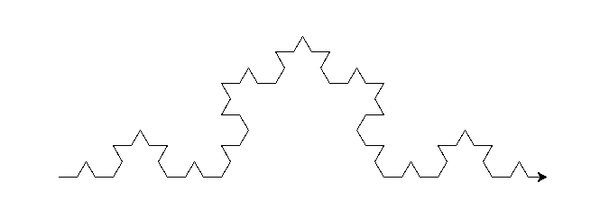
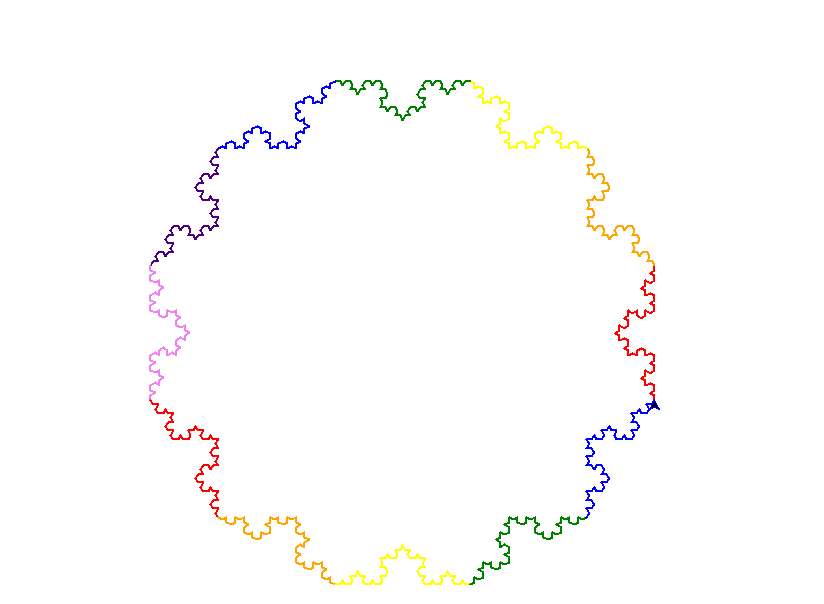
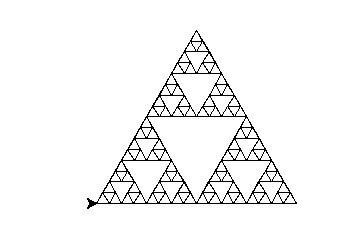
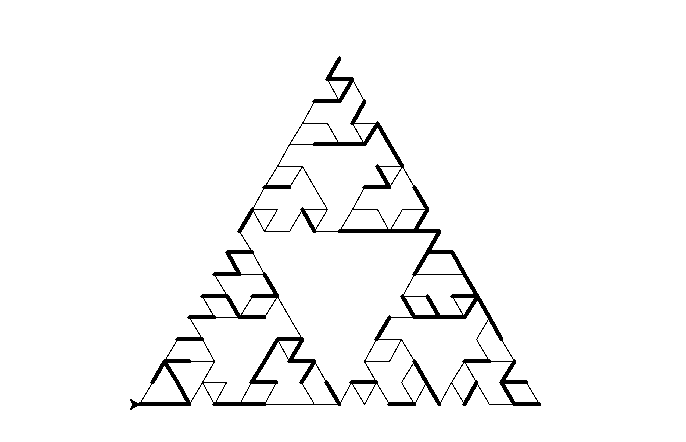
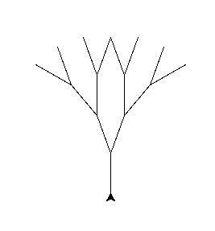

This is an example of a standard koch curve created using the function koch_curve(t, 4, 20).
In the modified version, the function makes a regular polygon where every side is a koch curve of designated depth. The number of sides can be changed by the parameter "side". Each side is also given a color of the rainbow in the order ROYGBIV.
The following demonstrates a modified example of the koch_curve using the function M_koch_curve(t, 4, 5, 12).
The modified koch curve is created using the following code:
def M_koch_curve(t, depth, length, side):
s = ['red', 'orange', 'yellow', 'green', 'blue', 'indigo', 'violet']
n = [360 / side] * side
i = 0
for e in n:
t.pencolor(s[i])
koch_curve(t, depth, length)
t.lt(e)
if i == 6:
i = 0
else:
i += 1
This is an example of a standard Sierpinski Triangle created using the function sierpinski(t, 5, 200).
In the modified version of the Sierpinksi Triangle, one of the three sides of the depth 1 triangles were randomly removed. The other two sides each have a fifty-fifty chance of being bolded.
This is an example of the modified Sierpinski Triangle created using the function M_sierpinski(t, 5, 400, 1).
The modified Sierpinski Triangle is generated using the following code:
def M_sierpinski(t, depth, length, width):
if depth == 1:
i = random.randrange(3)
for e in [0, 1, 2]:
if e == i:
t.pu()
else:
if random.randrange(2) == 0:
t.width(width * 4)
t.fd(length)
t.lt(120)
t.width(width/ 4)
t.pd()
else:
M_sierpinski(t, depth - 1, length / 2, width)
t.pu()
t.fd(length / 2)
t.pd()
M_sierpinski(t, depth - 1, length / 2, width)
t.lt(120)
t.pu()
t.fd(length / 2)
t.rt(120)
t.pd()
M_sierpinski(t, depth - 1, length / 2, width)
t.pu()
t.rt(120)
t.fd(length / 2)
t.lt(120)
t.pd()
This is an example of a standard fractal tree created using the function tree(t, 4, 50, 20).
